Lindavista
Lindavista Las Américas
Las Américas Ecatepec
Ecatepec Cámaras hiperbáricas
Cámaras hiperbáricas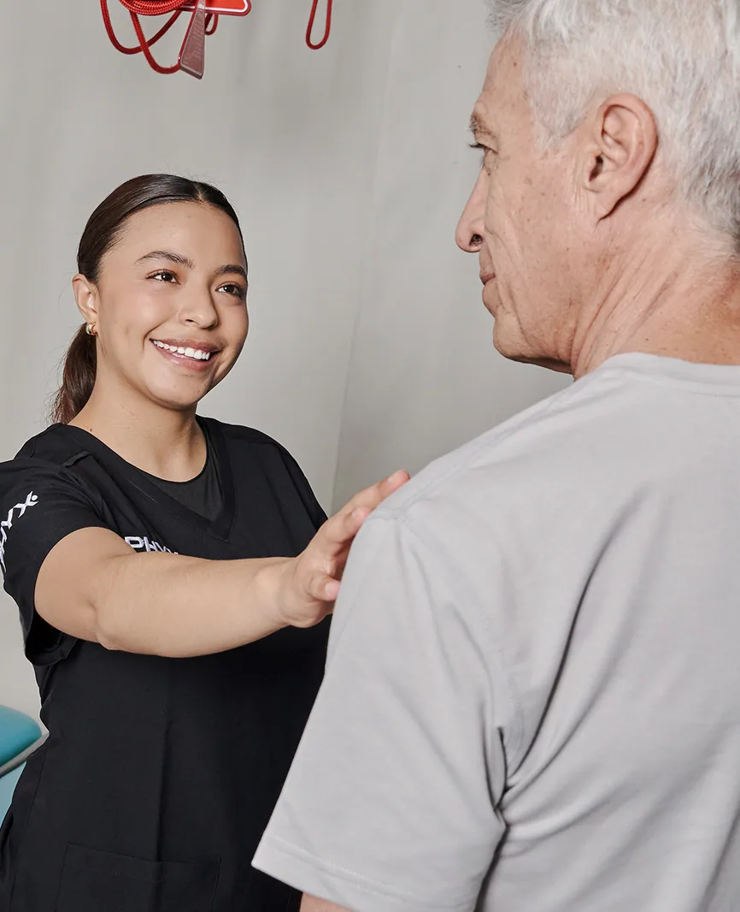


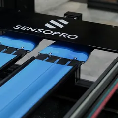

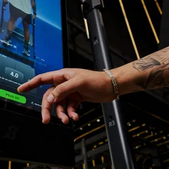


30+Tecnologías en un mismo centro
1. Haz tu valoración
No es una consulta rápida. Tu fisioterapeuta evalúa movilidad, fuerza y postura en una sesión de 45 minutos
En una sola visita valoramos cómo te mueves, te explicamos qué pasa y armamos un plan con especialistas y tecnología de rehabilitación
Agenda tu valoraciónNUESTRO MÉTODO
Unimos una valoración a fondo, especialistas que te explican tus resultados y tecnología de rehabilitación en un plan hecho para ti
Conocer más


No es una consulta rápida. Tu fisioterapeuta evalúa movilidad, fuerza y postura en una sesión de 45 minutos
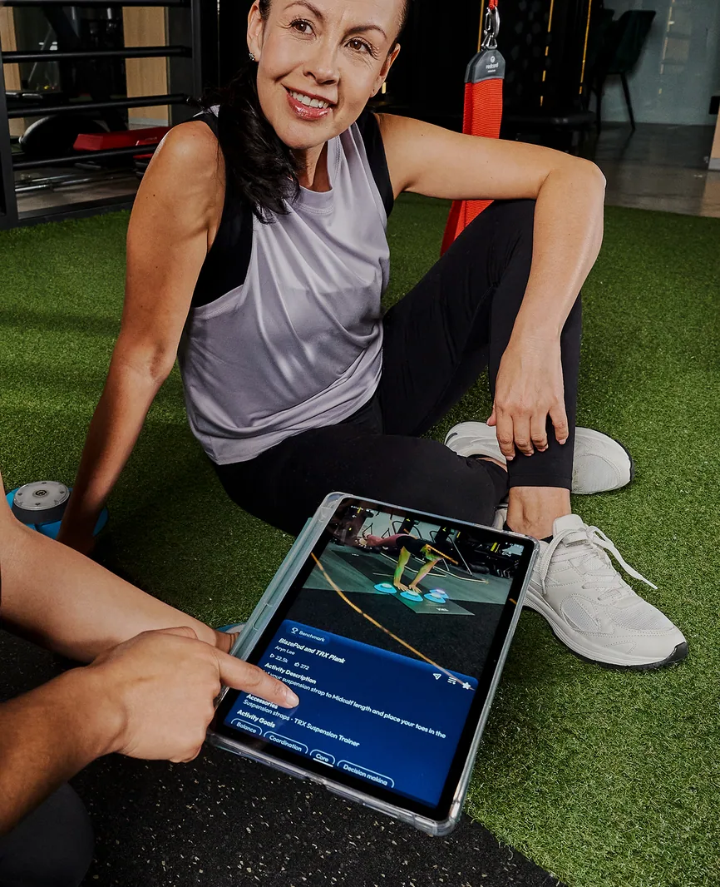
Tu especialista te explica qué encontró, con tus estudios en la mano, y define contigo las metas de tu plan

Tu plan combina sesiones con tecnología, ejercicio guiado y reevaluaciones para medir cada avance
TESTIMONIOS
"Llegué con una hernia lumbar y miedo a operarme"
 Mariana Gutiérrez
Mariana Gutiérrez  ★★★★★Descompresión robótica · Lindavista
★★★★★Descompresión robótica · Lindavista"Entreno tres veces por semana con mi fisio"
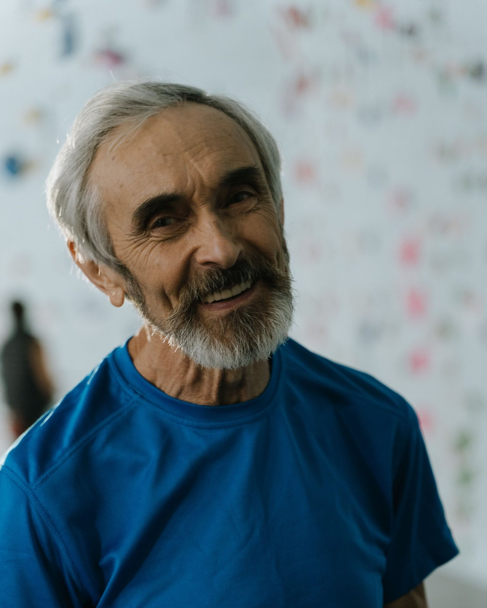
Jorge Ramírez ★★★★★Membresía adulto mayor · Las Américas
★★★★★Membresía adulto mayor · Las Américas"Después de mi ligamento cruzado pensé que no volvería a correr"
 Daniela Ortiz
Daniela Ortiz  ★★★★★Rehabilitación de rodilla · Ecatepec
★★★★★Rehabilitación de rodilla · Ecatepec"No tuve que ir de consultorio en consultorio"
 Ricardo Méndez ★★★★★Paquete Ortopedia · Lindavista
Ricardo Méndez ★★★★★Paquete Ortopedia · Lindavista33+
Tecnologías y servicios de rehabilitación, readaptación y recuperación entre nuestros tres centros
3
Centros en Lindavista, Las Américas y Ecatepec, además de fisioterapia a domicilio en CDMX y Edo. Méx.
45min
Dura tu valoración inicial con un fisioterapeuta especializado, antes de cualquier tratamiento
TECNOLOGÍA DE
LO QUE TRATAMOS
Estos son los casos que más atendemos. En todos empezamos igual: entendiendo qué te pasa antes de tratarlo
Agenda tu valoraciónUsamos descompresión vertebral robotizada y ejercicio guiado para trabajar la columna lumbar y cervical
Combinamos tecnología como SIS y ondas de choque con readaptación para que vuelvas a entrenar con un plan
Ortopedista y fisioterapeuta revisan tu avance juntos, semana a semana, después de tu cirugía
Fuerza básica, equilibrio y prevención de caídas con Sensopro y sesiones de Mayor Training
NUESTRA TECNOLOGÍA
Una sola prueba no cuenta toda la historia. Por eso reunimos valoración, tecnología de rehabilitación y especialistas en un mismo centro
Valoración por fisioterapiaEl primer paso de todo tratamientoDescompresión vertebral robotizadaBTL Spinal para columna lumbar y cervicalSIS, Sistema Super InductivoCampo electromagnético de alta intensidadSensoproEntrenamiento de equilibrio y propiocepciónRedcord NeuracActivación neuromuscular en suspensiónSpeedianceResistencia digital para fuerza mediblePresoterapiaCompresión neumática para recuperaciónTerapia de luzLuz roja, infrarroja y azul, máscara LEDCold plunge y contrasteKontrast Therapy en Las AméricasSauna infrarrojoRecuperación con calor en Las Américas Cámara hiperbáricaSesiones de 60 min en Las Américas y Lindavista
Cámara hiperbáricaSesiones de 60 min en Las Américas y Lindavista Consulta de ortopediaOrtopedia y traumatología en Lindavista
Consulta de ortopediaOrtopedia y traumatología en Lindavista Terapia de percusiónLiberación muscular guiada
Terapia de percusiónLiberación muscular guiada Presoterapia con LEDRecuperación en sillón con botas
Presoterapia con LEDRecuperación en sillón con botas Gimnasio terapéuticoReadaptación para volver a tu rutinaMayor TrainingFuerza, equilibrio y prevención de caídas
Gimnasio terapéuticoReadaptación para volver a tu rutinaMayor TrainingFuerza, equilibrio y prevención de caídas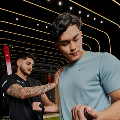
Sport TrainingFuerza, potencia y técnica para deportistas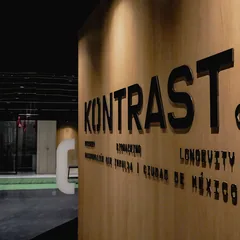
Kontrast LindavistaVibroacústica, PEMF y luz Valoración de hombro y posturaAnálisis de movimiento con tu fisioFisioterapia a domicilioValoración y sesiones en casa
Valoración de hombro y posturaAnálisis de movimiento con tu fisioFisioterapia a domicilioValoración y sesiones en casa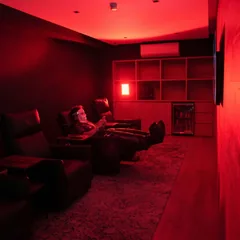
Recovery ZoneEspacio de recuperación by Kontrast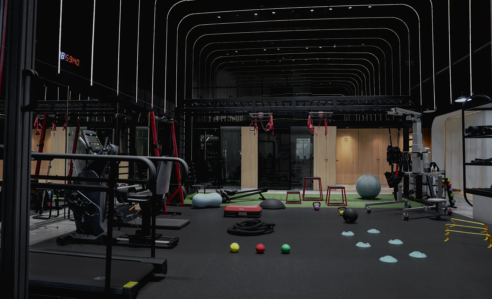
NUESTROS CENTROS
Valoración, rehabilitación y recuperación bajo un mismo techo, con un especialista dedicado a ti y no terapia de volumen
HIGIENE Y PROTOCOLOS
Cada camilla, equipo y espacio se limpia entre pacientes para que tu única preocupación sea tu recuperación
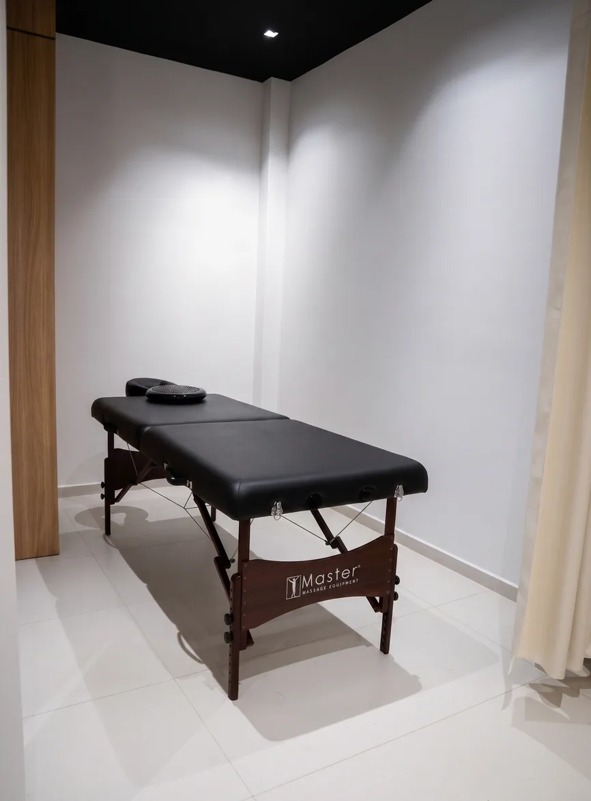
Mantén presionadoLimpiamos y preparamos la camilla y el material antes de cada sesión
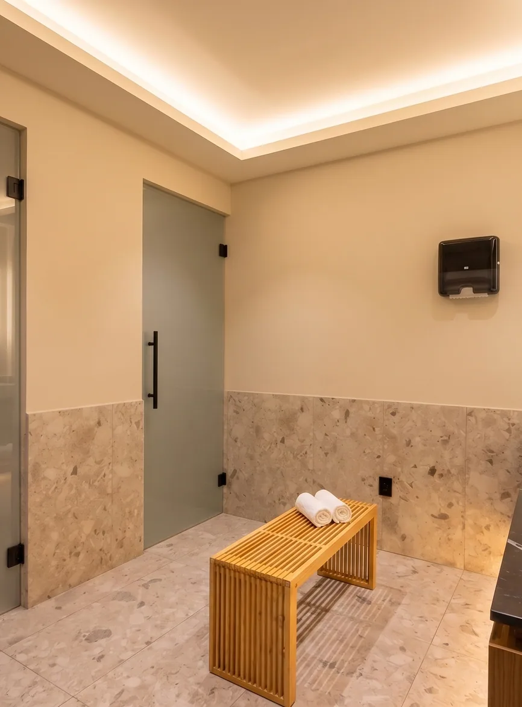
Mantén presionadoEspacios ordenados, con amenidades y revisión constante durante el día
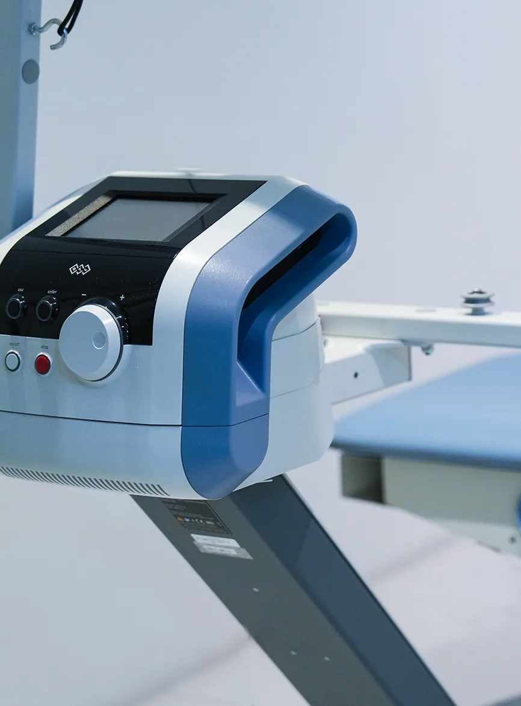
Mantén presionadoLos aplicadores y superficies de cada tecnología se sanitizan entre pacientes
PLANES
Empieza con una primera visita completa o entrena cada mes con evaluación funcional y un plan personalizado
Tu punto de partida en PHYX
Conocer Primera vezPrimera vez incluye:
Entrenamiento guiado y medido cada mes
Conocer PerformanceTodo lo de una valoración, más:
RED MÉDICA Y ALIANZAS
Trabajamos con una red de médicos que refieren pacientes y con aseguradoras y plataformas de bienestar
TESTIMONIOS
Descompresión robótica · Lindavista
Llegué con una hernia lumbar y miedo a operarme. Desde la valoración me explicaron todo con mis estudios y hoy hago mi vida normal
Paquete Ortopedia · Lindavista
No tuve que ir de consultorio en consultorio. El ortopedista y mi fisioterapeuta revisan mi avance juntos
Membresía Performance · Lindavista
Me miden fuerza y movilidad cada mes. Saber exactamente dónde estoy me motiva a seguir
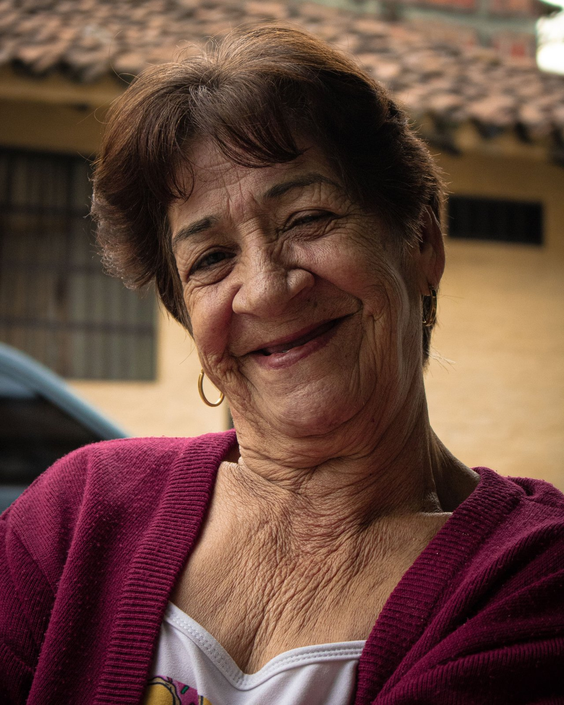
Membresía adulto mayor · Lindavista
Mi fisio adapta cada ejercicio a mí. Ya camino con más confianza y salgo sola al mercado
Membresía adulto mayor · Las Américas
Entreno tres veces por semana con mi fisio. Ya subo escaleras sin agarrarme y mis hijos notan el cambio
Recovery Zone · Las Américas
Entreno pesado y la Recovery Zone cambió cómo me siento al día siguiente. El equipo te guía en cada sesión
Cámara hiperbárica · Las Américas
Me explicaron cada tecnología antes de usarla y nunca me sentí un número más. Muy recomendable
Rehabilitación de rodilla · Ecatepec
Después de mi ligamento cruzado pensé que no volvería a correr. El plan fue claro semana a semana y ya regresé a mis 5K
Rehabilitación de hombro · Ecatepec
Desde recepción hasta los terapeutas, todos te tratan con calma. Recuperé el movimiento del hombro antes de lo que esperaba
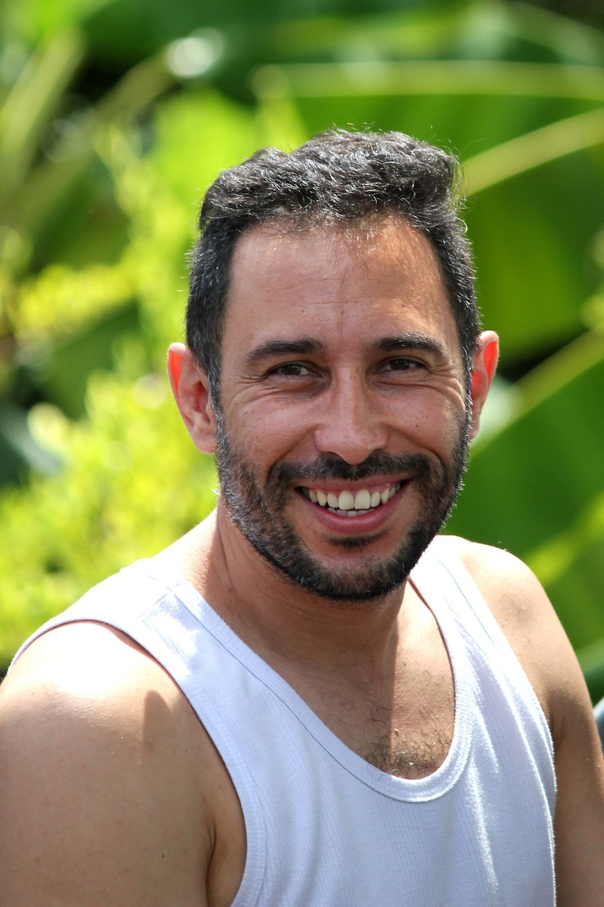
Rehabilitación de espalda · Las Américas
Me enseñaron mis estudios y el plan sesión por sesión. Saber qué estamos trabajando cambia todo
En PHYX empiezas con una valoración de 45 minutos y trabajas con un equipo multidisciplinario: fisioterapeutas, ortopedistas y nutriólogos. Tu plan combina tecnología de rehabilitación con ejercicio guiado y reevaluaciones para medir tu avance.
Un especialista te acompaña en cada sesión; no es terapia de volumen.
No es indispensable. Si ya tienes receta o estudios, tráelos a tu valoración. En Lindavista también puedes agendar una consulta de ortopedia con el Paquete Ortopedia.
La valoración dura alrededor de 45 minutos y cada sesión de rehabilitación o recuperación entre 50 y 60 minutos.
Una consulta de valoración por fisioterapia, una sesión Recovery y una sesión de rehabilitación o masaje Deep Tissue. El precio va desde $1,199 MXN y cambia según el centro.
Sí. Tenemos Mayor Training para trabajar fuerza, equilibrio y prevención de caídas en Las Américas y Lindavista, y fisioterapia a domicilio en zonas de CDMX y Edo. Méx.
Fisioterapia de alta tecnología con especialistas que miden cada avance, en tres centros de CDMX y Edo. Méx.
Agenda tu valoración